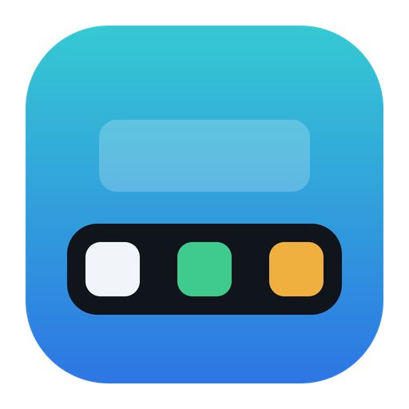

CleanDock Start
A full-screen Start menu with search on top, a row of your favourite widgets, pinned apps, recent files and every app from A to Z. Opens from the Start button, the Windows key or Ctrl+Esc.
CleanDock puts your apps and 115 live widgets in one Liquid Glass bar — and 26 more widgets right on your desktop. Light, beautiful, and fully reversible.
Free · .exe and .msi installers · Quitting brings the taskbar back
Every tile in the dock is a small live app: system load, weather, music, focus timers, revenue, AI limits and more. Click a tile to open its card; pick new ones from the widget picker.
115 widgets in 13 categories. Badges show where each one gets its data.
No widget matches that search.
Place big, friendly cards anywhere on the desktop: clocks, weather, a calculator, sticky notes, timers, recorders. Each one has a light and a dark style and scales from 60% to 200%.
CleanDock ships with its own Start menu, file browser, notes board and screenshot tool — all drawn in the dock's Liquid Glass, all one click from the bar.
A full-screen Start menu with search on top, a row of your favourite widgets, pinned apps, recent files and every app from A to Z. Opens from the Start button, the Windows key or Ctrl+Esc.
Places and drives, a breadcrumb you can type into (Ctrl+L), grid or list views with previews. Copy, paste and delete are done by Windows itself, so everything can be undone.
Notes as task cards: a board per status, due dates, reminders, priorities, labels and checklists. Saved as you type, and the Notes widgets show what's due today.
Freeze the screen, drag an area, then draw on it — pen, arrow, box, highlighter, text and blur. Ctrl+C copies, Ctrl+S saves, Ctrl+Z undoes.
Rest the pointer on an app in the dock to see a live picture of each of its windows. Click one to bring it forward, or close it right there.
One bar instead of a taskbar, a tray and a dozen open apps — and nothing you can't undo.
A real Windows blur behind the dock and every pop-up, clipped to smooth rounded corners. Or pick a solid style: Slate, Paper or Midnight.
CPU, battery, weather, music, your next task and today's revenue — live in the bar, without opening a single app.
No Windows files are changed. The taskbar is set to auto-hide while the dock runs and comes back the moment you quit — even after a crash, with --restore.
Account keys are encrypted with Windows data protection and sent only to the service they belong to. Most widgets never leave your PC.
Built with Rust and Tauri, so it starts with Windows in a moment and stays out of your way.
Bottom, top, left or right. Maximized windows stop above the dock, and on a side edge the tiles stack in a column.
Selected buttons, rings and highlights follow the accent colour you chose in Windows Personalisation.
Windows key opens Start, Win+E opens Files, and cleandock.exe takes flags to move the dock, open settings or quit.
Switch the style and the edge below — it's the same dock you get on your PC.
cleandock.exe --restore repairs it.# move the running dock to another edge
> cleandock.exe --position=left
# open Settings or the Start menu
> cleandock.exe --settings
> cleandock.exe --start
# open CleanDock Files in a folder
> cleandock.exe --files=D:\Projects
# close the dock, bring the taskbar back
> cleandock.exe --quit
> cleandock.exe --restoreCleanDock is free, with no ads and no tracking. If it makes your desktop a little nicer every day, a coffee helps keep the updates and new widgets coming.
Yes. Download it, use every widget, no account needed. If you'd like to support it, you can buy me a coffee.
No. While the dock is open it switches the taskbar to auto-hide and hides its window. Quitting restores both. The original setting is kept in %LOCALAPPDATA%\CleanDock\taskbar.state so --restore can put it back even after a crash.
Windows 11 and Windows 10, 64-bit. Download the .exe installer, or the .msi if you deploy with policies.
Run CleanDock again while it's open, or right-click the dock, to open the widget picker. "Ready to use" shows everything that works right away; account widgets show "Click to connect" until you paste a key.
Only on your PC, encrypted with Windows data protection (DPAPI). Each key is sent only to the service it belongs to.
They're finished designs — like Claude, ChatGPT, Gemini and Cursor usage — that still show sample numbers while their connection is being built. They're marked in the picker.
Yes, an installed copy always starts with Windows. You can still switch it off in Windows Settings → Apps → Startup, and CleanDock respects that.

Version 0.9.8 · Windows 11 & 10 · 64-bit